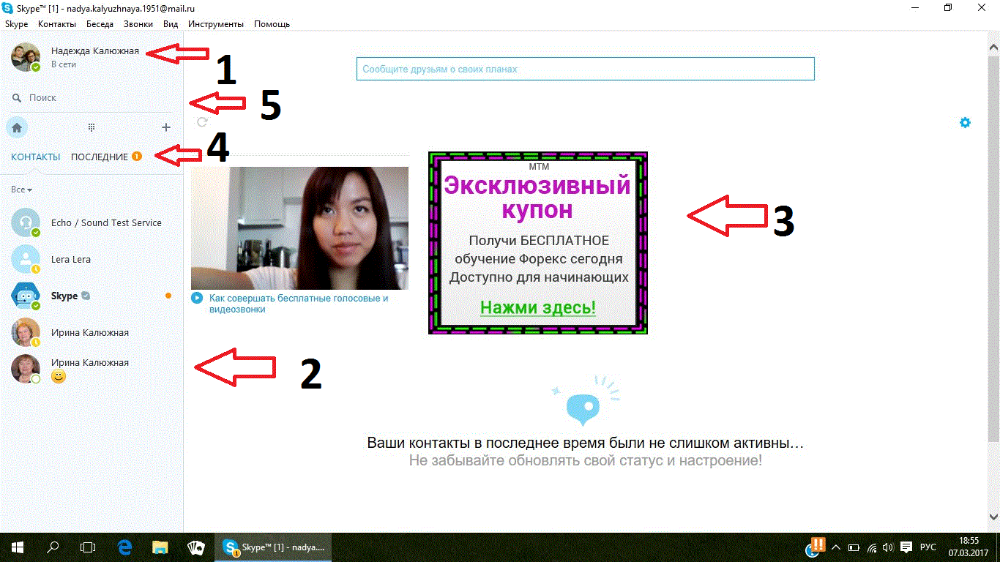

Первый урок по программе Вадима - программиста
Итак, первый урок посвещается программе Скайп ( Skype ). Данная программа преднозначена для интернет-звонков. У тебя он предварительно установлен, так что будет довольно легко.

Первое что нужно сделать, это двойным нажатием левой кнопки мыши по ярлыку Скайпа и открыть его.

Так выглядит главное меню программы Скайп. Красными стрелочками я указал тебе самое важное, что тебе может пригодится на первых этапах.
1: Твоё имя, фотография.
2: Список контактов.
3: Реклама, желательно не нажимать на неё.
4: Последние вызовы/переписки.
5: Поиск среди контактов.
Тебе предстоит практиковать исходящие звонки, входящие звонки, печатать с помощью клавиатуры сообщения своим контактам.